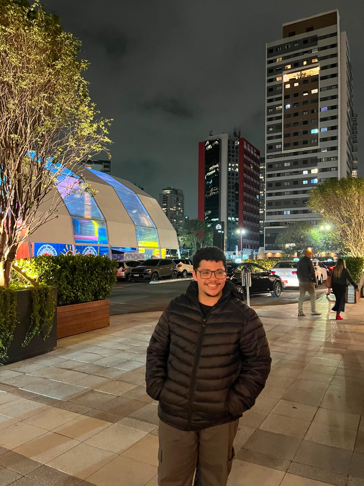

Vini podera voltar a usar discord após 4 anos de afastamento!

Após 4 anos sem poder usar discord, Vini teve uma séria conversa com seus pais. Durante à conversa mostrou seus pontos fazendo marcão acreditar no garoto de 18 anos assim permitindo ele voltar a usar discord. "Estou muito feliz em poder voltar para meu antigo lar, sabia que em algum momento eu voltaria. Vai ser uma honra rever os antigos grupos, colegas e amigos. Além de claro poder conversar com meus amigos durante os games" Disse Vini em entrevista ao apenas virgens
O FOFINHO ESTA DE VOLTA, APENAS UMA CHAMADA PARA OS GAMES SEPARA ELE DESDE REENCONTRO!